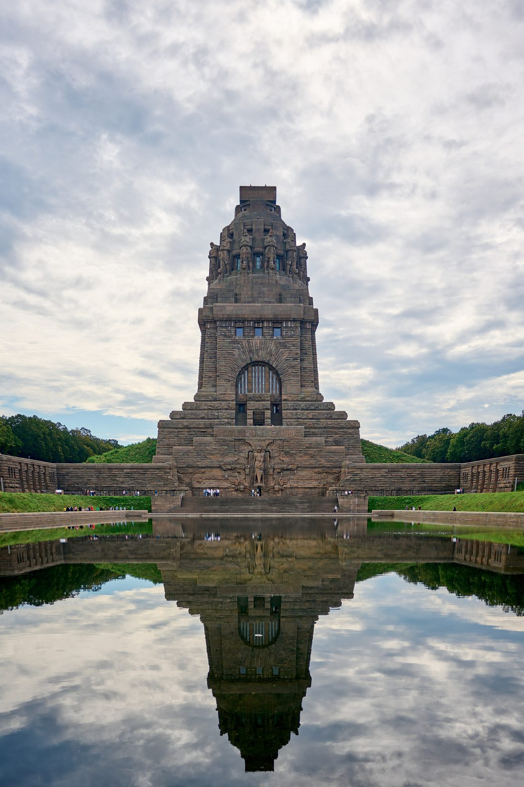
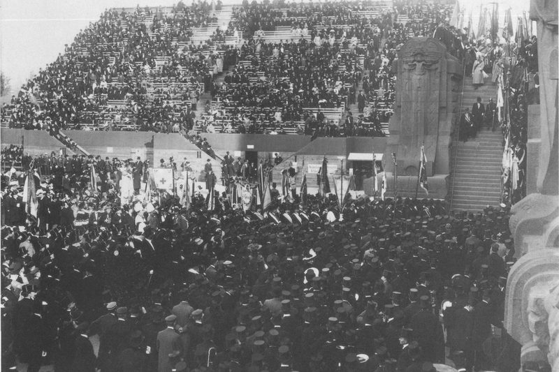
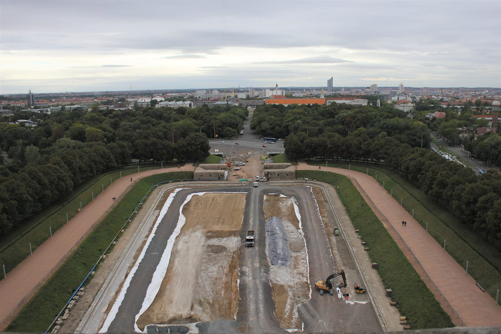
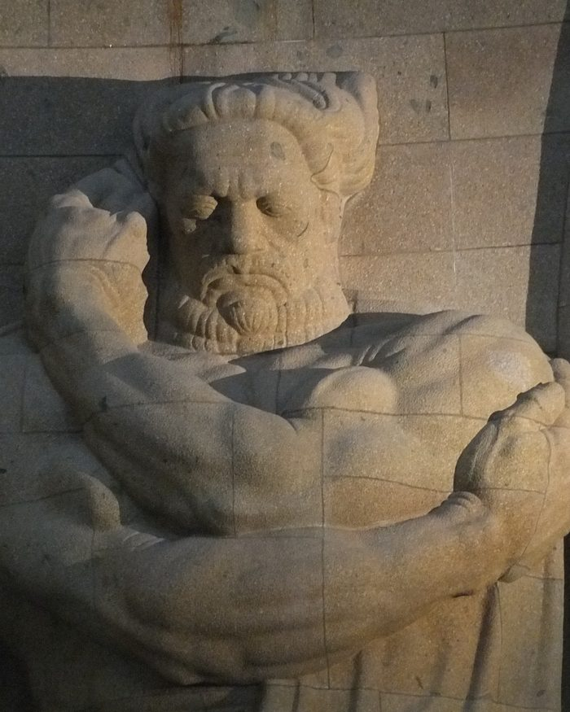

Leipzig · seit dem 9. Oktober 1998
In den Neunzigern sollte man es verfallen lassen.
29 Leipzigerinnen und Leipziger fanden das nicht hinnehmbar und gründeten den Förderverein Völkerschlachtdenkmal e. V. Seither sind über 3,5 Millionen Euro Spenden in das Denkmal geflossen — als zwölf fertige Bauteile, die man heute anfassen kann.
- Gegründet
- 1998
- Mitglieder
- fast 250
- Fertige Projekte
- 12
- Eingeworben
- über 3,5 Mio. €
Der Anlass
Ein Denkmal, das keiner mehr bezahlen wollte.
Das Völkerschlachtdenkmal wurde zwischen 1898 und 1913 aus Spenden gebaut und am 18. Oktober 1913 eingeweiht. Es erinnert an die Völkerschlacht bei Leipzig im Oktober 1813, bei der sich über eine halbe Million Soldaten aus fast ganz Europa gegenüberstanden und mehr als 100.000 Menschen starben.
Fast hundert Jahre später hatten Besucher, Wetter und Krieg ihre Spuren hinterlassen. In den 1990er Jahren wurde erwogen, das Denkmal „kontrolliert verfallen“ zu lassen. Am 9. Oktober 1998 gründeten deshalb 29 Leipziger Bürgerinnen und Bürger den Verein. Sein satzungsgemäßer Zweck steht seither unverändert da: Erhaltung und umfassende Sanierung.
Der Verein versteht das Denkmal nicht nur als Gedenkstätte für die Toten der Völkerschlacht, sondern als Mahnmal für Frieden, Freiheit, Völkerverständigung und europäische Einheit.

Das Bauwerk in Zahlen
hoch — bis heute eines der größten Denkmäler Europas.
des Bauwerks bestehen aus Beton. Der Stein ist nur die Haut.
Blöcke Beuchaer Granitporphyr liegen davor — gebrochen bei Beucha, 15 Kilometer östlich.
Gelände gehören dazu und müssen jedes Jahr gepflegt werden.
Ein Denkmal, das aussieht wie aus Stein und in Wahrheit ein früher Betonbau ist — das prägt bis heute jede Sanierung, die der Verein finanziert.
Was daraus geworden ist
Zwölf Bauteile, die es
ohne Spenden nicht gäbe.
Jede Zeile ist ein abgeschlossenes Bauvorhaben. Der Balken zeigt, wie viel davon der Förderverein aus Spenden getragen hat — manchmal alles, manchmal den entscheidenden Anteil, ohne den nichts angefangen worden wäre.
Acht Sitzbänke in den Außenanlagen
Das erste Vorhaben des Vereins, zwei Jahre nach der Gründung.
Wiedereinbau des Aufzugs von der Krypta
60.000 € Sachspende der Firma OTIS, 100.000 € aus Geldspenden.
Beseitigung der Kriegsschäden in der Ruhmeshalle
Das größte Einzelvorhaben der frühen Jahre, überwiegend von öffentlichen Gebern getragen.
Restaurierung des Stifterzimmers
Der Raum, in dem heute die Messingtafeln der größten Spender hängen.
Barrierefreier Zugang
Der erste Schritt zu einem Denkmal, das man auch im Rollstuhl betreten kann.
Haupttreppe vom Wasserbecken zum Eingangsplateau
Fertig zum 100. Jahrestag der Einweihung. 200.000 € kamen von der Stadt Leipzig.
Kopfbauten mit den dazwischenliegenden Treppen
Die seitlichen Pylonen der großen Freitreppe.
Kutscherstube
Das kleinste abgeschlossene Vorhaben — und trotzdem eines von zwölf.
Wasserbecken mit Wegeanlage
Das Becken, in dem sich das Denkmal spiegelt — der bekannteste Blick auf das Bauwerk.
Lindentreppen
Die seitlichen Aufgänge durch die Lindenreihen des Geländes.
Barrierefreie Rampen
Fünfzehn Jahre nach dem ersten barrierefreien Zugang der nächste Schritt.
Umrüstung der Außenbeleuchtung auf LED
Vorerst letztes abgeschlossenes Vorhaben. Im selben Jahr wurden die Außenanlagen fertiggestellt.


Ein Muster in der Liste
Die Hälfte dieser Projekte ist ein Weg hinein.
Aufzug von der Krypta, 2003. Barrierefreier Zugang, 2007. Haupttreppe, 2013. Treppen zwischen den Kopfbauten, 2016. Lindentreppen, 2020. Barrierefreie Rampen, 2022.
Das ist kein Zufall, sondern das, was ein Förderverein an einem 91 Meter hohen Bauwerk tatsächlich ausrichten kann: dafür sorgen, dass Menschen hineinkommen und hinaufkommen. Heute erreichen Rollstuhlfahrerinnen und Rollstuhlfahrer das Denkmal über eine Rampe, ein Aufzug bringt sie in die innere Galerie, und ein taktiles Leitsystem führt blinde und sehbehinderte Besucher vom Eingang durch das Bauwerk.
Was jetzt ansteht
Die Katakomben sollen aufmachen.
Unter der Krypta liegt eine Ebene, die heute nur geführte Gruppen betreten dürfen. Dort steht eine Ausstellung zur Entstehungsgeschichte des Denkmals — und dort sieht man, was die Erbauer vor über hundert Jahren ingenieurtechnisch geleistet haben.
Für die dauerhafte Öffnung fehlt ein zweiter, gesetzlich vorgeschriebener Rettungsweg. Geplant ist eine vierläufige Stahltreppe, dazu müssen elektrotechnische Anlagen angepasst werden. Seit 2025 sammelt der Verein dafür.
sind für die Öffnung veranschlagt. Der Verein wirbt seit 2025 dafür.

Was eine Spende hier wird
Geld wird bei uns zu einer Zeile in Metall.
Der Verein hält jeden Namen fest, der etwas gegeben hat — an vier verschiedenen Orten im und am Denkmal, je nach Höhe der Summe. Das ist keine Werbung, das ist die Buchführung dieses Vereins.
- Ehrenbuch des VereinsJede Spende, gleich welcher Höhe, wird eingetragen.
- Spendertafeln vor der KryptaPrivate Spender ab 100 Euro, Firmen ab 1.000 Euro.
- Bronzeplatten auf den Postamenten der HaupttreppeFür alle, die einen Stifterbrief erworben haben. Fest verankert, im Freien, für jeden zu sehen.
- Messingtafeln im historischen StifterzimmerAb 6.000 Euro Gesamtspendensumme. Der Raum wurde 2004 aus Spenden restauriert.
Der Stifterbrief
Eine handsignierte Urkunde, feierlich überreicht durch Leipzigs Oberbürgermeister. Es gibt sie in drei Stufen.
Gold
ab 2.013 €
Nennung auf den Internetseiten des Vereins — bei Firmen mit Logo.
2013: das Jahr, in dem das Denkmal hundert wurde.
Silber
ab 1.000 €
Urkunde, Eintrag im Ehrenbuch, Nennung auf den Spendertafeln vor der Krypta.
Bronze
ab 500 €
Urkunde, Eintrag im Ehrenbuch, Gravur auf den Bronzeplatten der Haupttreppe.
Der Verein
Fast 250 Menschen, Firmen
und Verbände tragen das.
Bürgerinnen und Bürger, Unternehmen, Institutionen, Verbände — so wie einst der Patriotenbund, der das Denkmal überhaupt erst finanziert hat. Vier Wege hinein:
Natürliche Person
Die gewöhnliche Mitgliedschaft für Einzelpersonen.
Ermäßigt
Für Studierende, Schülerinnen und Schüler, Auszubildende, Arbeitslose und Rentner — gegen Nachweis.
Juristische Person
Für Unternehmen, Institutionen und Organisationen.
Förderndes Mitglied
Für alle, die den Verein unterstützen wollen, ohne die volle Mitgliedschaft zu übernehmen.
Der Mitgliedsbeitrag ist bis zum 31. März des laufenden Geschäftsjahres zu entrichten, bei Eintritt für das gesamte Jahr. Gekündigt werden kann mit dreimonatiger Frist zum Jahresende.

Hinfahren
Wenn Sie es sich ansehen wollen.
Das Denkmal wird von der Stiftung Völkerschlachtdenkmal Leipzig betrieben, das Museum FORUM 1813 vom Stadtgeschichtlichen Museum Leipzig. Der Förderverein fördert — Karten gibt es dort.
| April bis Oktober, täglich | 10–18 Uhr |
|---|---|
| November bis März, täglich | 10–16 Uhr |
| Geschlossen | 24.12. und 31.12. |
| Erwachsene | 12 € |
| Ermäßigt | 10 € |
| Familie (bis zwei Erwachsene) | 24 € |
| Kinder bis 6 Jahre | frei |
Straße des 18. Oktober 100, 04299 Leipzig · Straßenbahnlinie 15, S-Bahn S1, S2 und S3 · kostenlose Parkplätze am Gelände.